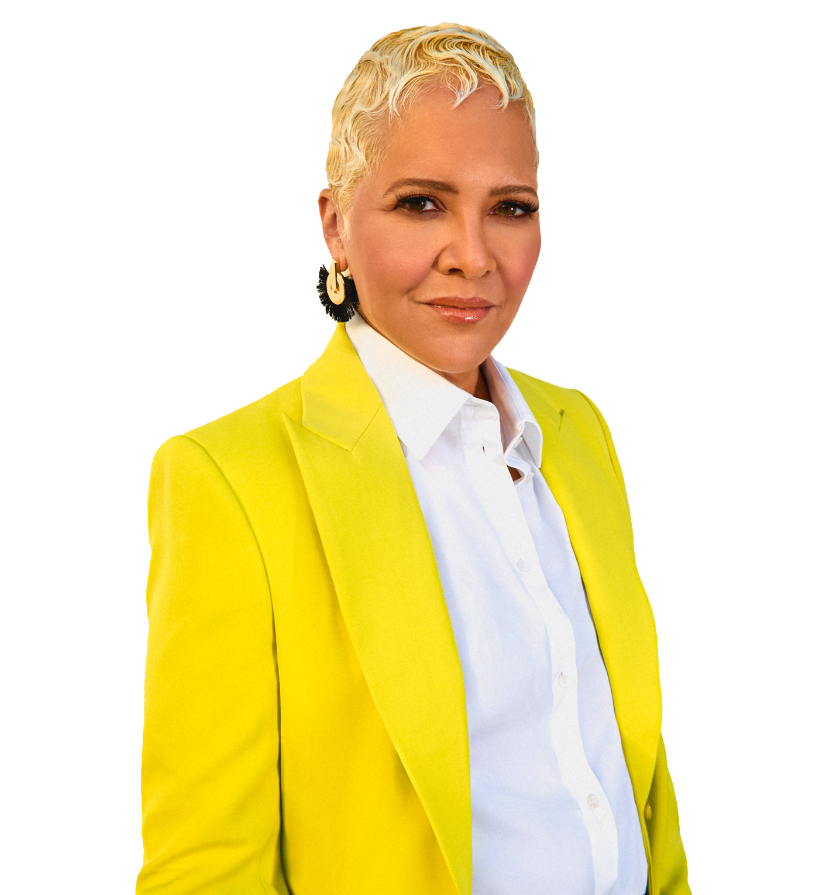

Cristina Mancini
she/her
Christina Mancini is the current CEO of Black Girls Code with the vision to “ushering in the next generation of tech innovators and leaders”.
Her previous work experiences includes Chief Engagement Officer and Chief Marketing Officer at Salesforce and the position as head of 20th Century Fox's Technology & Creative Strategy group. She also spent multiple years as a board member for San Francisco Botanical Garden.
While CEO at Black Girls Code, she has expanded the national summer camps, workforce development programs, and launched Code Along Jr (a free coding academy).
Mancini believes in amplifying stories that matter.
"One of the many professionals I admire is Dr. Joy Buolamwini. Her work, featured in the film Coded Bias, shines a light on algorithmic discrimination and inspires others to prioritize fairness in AI development."
-Cristina Mancini, Feb 2025
Recognitions that Christina Mancini has received includes in:
- Ebony Power 100
- World Woman Foundation’s #ShesMyHero
- BizTech’s Top 30 IT Influencers to Follow
Mileyca Oporta
she/her
This tech hero is Mileyca Oporta, a Costa Rican female electronics engineer and tireless advocate for women in STEM: she’s passionate about aerospace engineering, promotes STEM education in underrepresented communities, is the President of the Society of Women Engineers Costa Rica, a trilingual professional, a second-generation immigrant, and a mother on top of it all.
Not only was Mileyca a full-time student and worker but was raising a child on her own while figuring out what her organizational aspirations were. While trying to give her daughter a life full of opportunity, she realized she too had unfulfilled opportunity in her own life. Becoming a back-office assistant at 20 years old led her to discover engineering as a career path. Ever since, she has dedicated herself to learning more about the industry of aerospace engineering that she’s grown to love and advocates for those at a disadvantage in her field.
She is an inspiration to all young women, and people who want to pursue a STEM career, or a career that others will tell them not to – whether it breaks antiquated racial or gendered societal standards or not. Mileyca overcame countless challenges and continues to prove her contribution to the engineering field every day by finding new opportunities to lead, teach, and advocate for others.